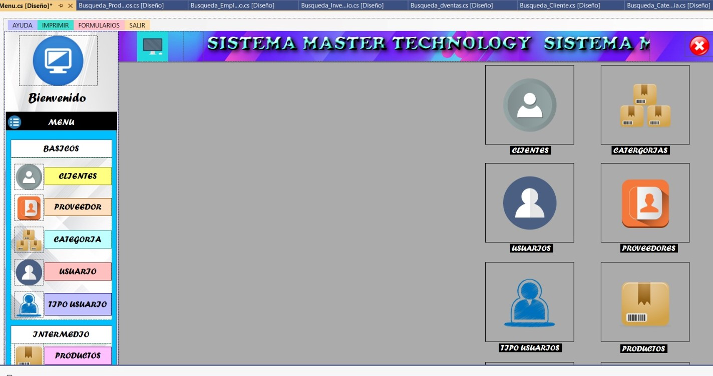
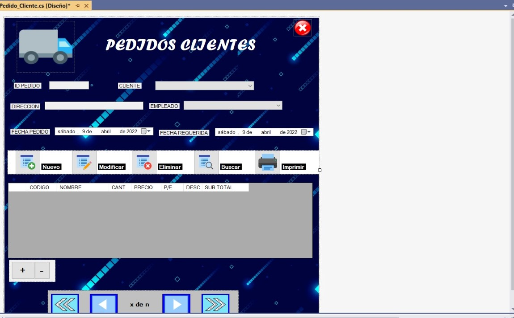
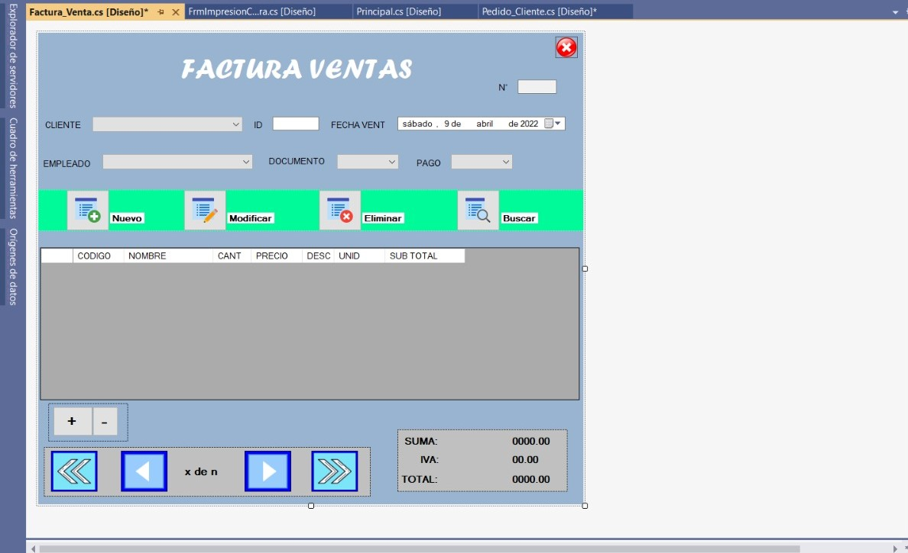
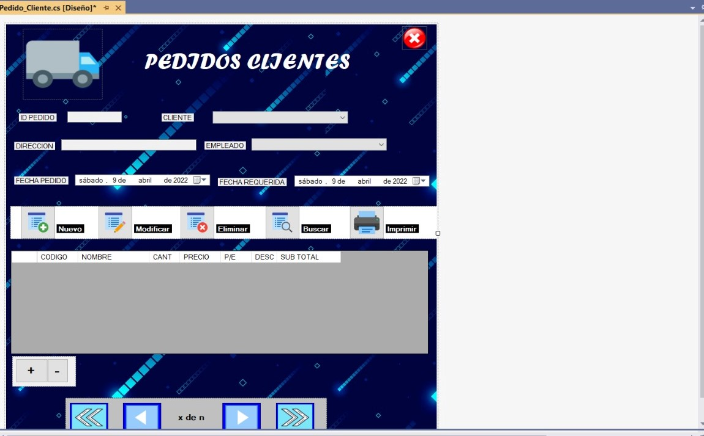
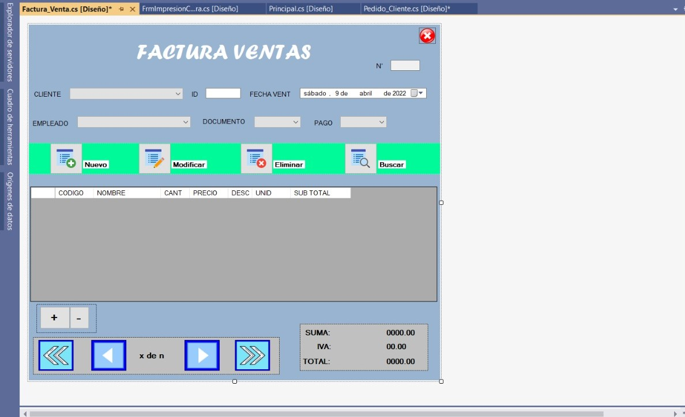

Facturation systems
 




The system is based on the registration of data, whether of food products, registration of articles for homes or any type of registration that we wish to carry out, in addition This has the power to make an invoice of the registry or of the different products that we want to print.
- Objective: Make a desktop application in which they can be done records of all kinds, just as this allows an invoice by showing a report detailed of whatever is registered.
- Description of the work process: A schedule for members was established of the team to be able to make the different advances to the project.
- Role and responsibilities: My role was backend programmer and responsibilities It was making the stories of users assigned to me for project.
- Used programming language: C#